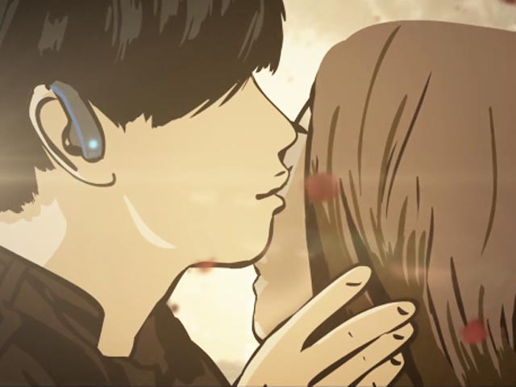
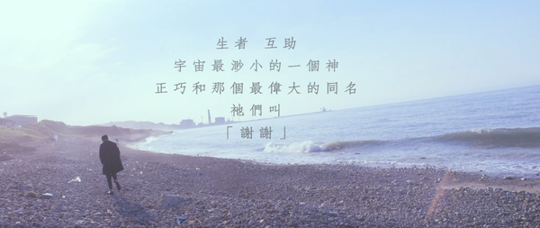
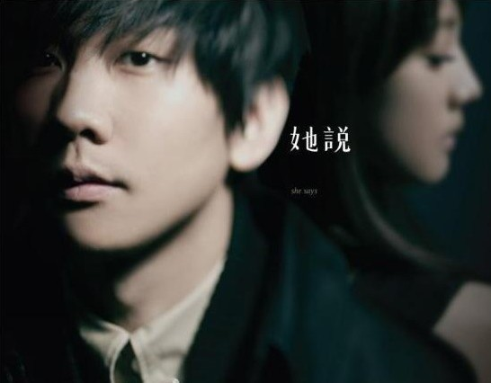
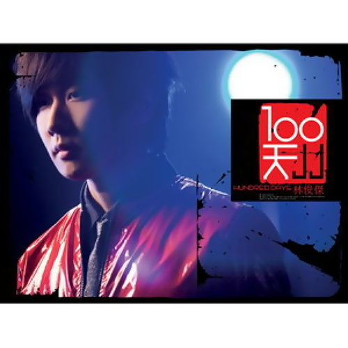
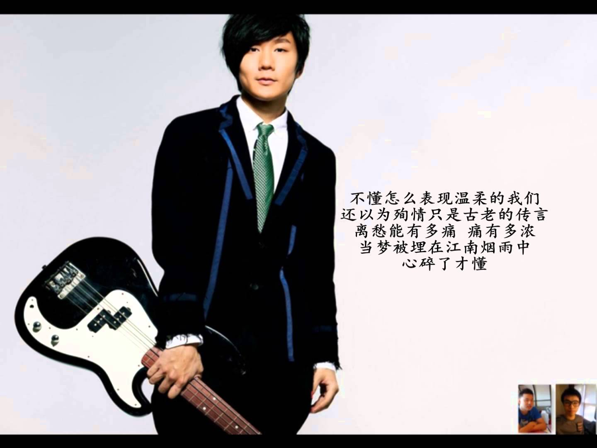
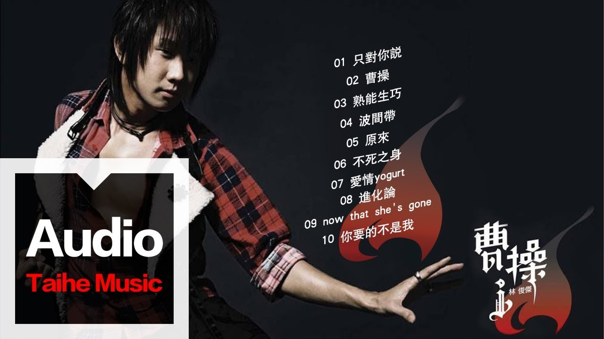

Top ten classic songs
1.修練愛情
《修煉愛情》創作背景是寫給一位在空難中離世的女性好友，不過兩人不只是朋友，女生是深深地喜歡著他，每天送早餐到家門口，但在當時他沒有接受對方的心意，不過後來那位女生為了考察而搭飛機結果爆炸身亡，當他發現女孩的遺物中有自己的照片時，才知道對方一直把自己的相片隨身攜帶，這段往事在他心中留下了深刻的遺憾，於是寫了這首歌《修煉愛情》紀念這段無法彌補的傷痛。

2.偉大的渺小
《偉大的渺小》歌詞寫出JJ對生活的感受，表達每個看似微不足道的過程，都是成就所謂「偉大」的重要因子，這些養分造就了這張以「真實」為題的概念專輯，更希望藉此傾聽自己的內心，找回最初的自己。微電影將一個老男人、一個年輕男子、一個都會女性與一個小男孩，4個人看似毫無關係的人，象徵著生命中的4個不同的角色，串聯成一篇動人的故事，尋回最初的自己。JJ在沈澱的這兩年中，用力感受生活，孕育出這張全新專輯《偉大的渺小》。
3.不為誰而作的歌
《不為誰而作的歌》這首歌詞的故事，是要提醒大家「珍惜」：「每個人或許，身邊都有一些默默付出，但你總視為理所當然，甚至不會注意到的人。他或許幫助過你，可是你忘了，回頭才發現，原來有這個一個人就在你身邊。」希望每個人都能好好對待身邊的人。

4.可惜沒如果
《可惜没如果》描述的是一段關於“錯過”的故事，深刻寫下每個人或許都曾歷經的遺憾。JJ與懷秋飾演一對在軍校畢業的學生，夜晚回到校園並闖入學校禮堂，喜歡彈琴的JJ因為看見講台上的鋼琴，便自顧自地彈奏了起来，驚動了鋼琴老師Angelababy。正當Angelababy要開口阻止時，為了掩護JJ的懷秋秋挺身而出，扛下闖入禮堂彈琴的“罪責”。JJ、懷秋、Angelababy的三角戀由此而起，Angelababy不知道當晚的鋼琴曲其实是JJ所彈，陰錯陽差之下愛上懷秋，因此也吃了不少苦頭，懷秋的花心不但让她時常受傷，暗戀Angelababy的JJ甚至還為此與懷秋發生衝突。因為與懷秋的兄弟情誼，JJ一直無法對女方坦白，一直到最後仍不願承認對Angelababy的情感，不斷錯過之餘，也讓雙方徒增遺憾
5.學不會
《學不會》這首歌詞的故事是在說我們以各自不同的形式，在喧囂的城市瓢流和尋找著陸，而關於愛情，我們似乎永遠都是新手… 一首即使悲傷依然美麗的歌曲，是JJ私密的愛情感觸，也是一個永恆愛情的難解習題，讓我們同感苦澀。
6.她說
《她说》是一個“她”心绪世界的戲劇腳本，它除了旋律和歌词之外，更是一個故事、一组畫面。歌詞裡女性角度的落寞、凋謝情懷的出現，才讓該曲將作曲人林俊傑“他說”的世界和孫燕姿“她說”的世界連成一片，顯現出歌曲創作的本意。《她說》雖然在形式上只是一首簡單的鋼琴加旋樂的情歌，但流暢而動人的旋律部分，却因為音乐本質和純粹的優美，很容易讓聽眾忘了曲風、概念這樣的附加意義。

7.第幾個100天
經歷100天的專輯宣傳之後，JJ林俊傑內心深處的沉澱，已經無法用任何的言語去表達。而這些日子裡與所有歌迷的互動，感受著所有人愛著他、支持著他的力量，在專輯發行的第100天，以一場音樂會用溫暖的頻率釋放音樂情感，用最誠懇、溫馨、近距離的演出方式，以及Love來謝謝所有聽眾與觀眾們，不管認識或不認識林俊傑的人們，都能看見感動演繹、唱作俱佳卻更洗鍊、人性的、真實的JJ林俊傑，共度難忘的一晚。

8.小酒窩
《小酒窩》是一首甜美的男女對唱情歌，林俊傑說以往的主打都是很有氣質的快歌，這次想讓音樂回歸原始，才先選出這首歌主打，其實這首歌對JJ意義重大，是寫給圈外人的一首情歌，雖然是沒有開花結果的戀情，但還是祝福她幸福快樂。
9.江南
《江南》是一首走過時代與時空錯亂的特殊情歌，開場的風沙走石並非江南特屬，而在编曲中特别加入洞蕭樂器，透露些許神秘氣息，而此樂器與日本的尺八音色相通，想藉由日本武士道精神，傳播愛情裡的忠貞。此首歌其實想表達即是由古自今不變的愛情觀。讓在21世紀，身心銅牆鐵壁，心靈極度貧乏的我們，再重新感受一下永恆不變的愛情魔力！

10.曹操
每個人心中都有一個曹操，當目標出現的時候，就會充滿霸氣與自信付出所有！《曹操》的專輯概念簡單卻非常有力量。與做音樂時的JJ跟曹操想要一統天下的精神一樣，拼了命付出所有，希望能夠征服所有人的耳朵!讓音樂和人合為一體。也希望他的音樂可以讓全華人世界的人接受和喜歡。
